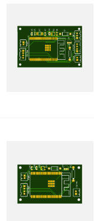

Mechanical
The design was modified to include better fit for the sensors in the design for sensor accuracy. More material was purchased which is needed for this purpose and will be sewed into the design for the next design iteration.
Build! Build! Build!
The design was modified to include better fit for the sensors in the design for sensor accuracy. More material was purchased which is needed for this purpose and will be sewed into the design for the next design iteration.
The PCB design was completed this week and the order has been sent out. Final components have also been ordered. Once everything arrives, the PCB will be tested and if any corrections are needed they will be made.
This week we are continuing to develop the app and Flask API. Now the API also provides the averaged BPM, IBI, and EDA values from the data provided. We are also working on a more efficient method for storing the raw sensor data in the app. Next steps are to start calibrating the sensors to be more accurate and setting up the final API calls and call them at regular intervals.